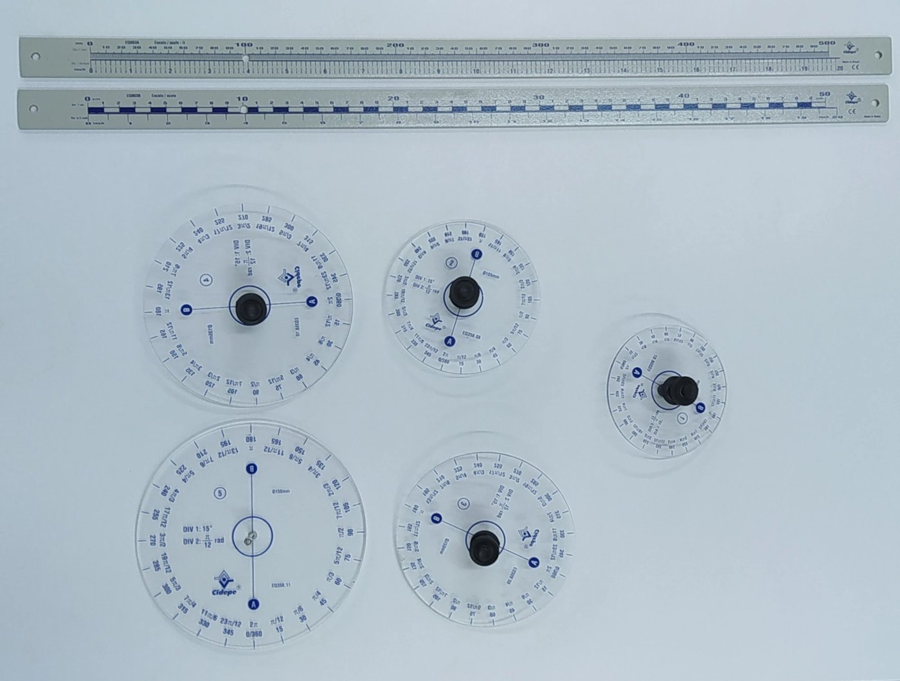

Laboratório: 100 min · preencha à mão e entregue no fim do encontro
Identificação
______/______/_______
12345
A rubrica desta trilha e a deste Roteiro de Bancada (RB) estão publicadas no site desta disciplina.
Hoje o π sai da bancada. Na Folha de Atividades (FA) do Pré-Lab, você mediu círculos numa
tela com as duas réguas; agora são cinco discos de acrílico, só a régua em mm e o mesmo modelo,
C = π D. Você mede sozinho ou em dupla ou trio, mas cada um entrega o seu roteiro. A estimativa e
a previsão se escrevem a caneta, antes de medir, e não se apagam. Esta trilha vale nota.
1. Materiais, procedimentos e previsão

Figura 1 — Os cinco discos de acrílico da bancada
Na bancada há cinco estações de medição. Cada uma tem um disco de acrílico, uma régua graduada de 0,0 a
500,0 mm, uma tira de papel, uma tesoura e um pedaço de barbante. Com eles você vai aprender o método que
usaremos nesta disciplina: medir, anotar, organizar, fazer o gráfico, calcular, analisar e interpretar o
número π, uma constante importante da Física experimental.
O π está escondido em todo objeto de forma circular: nas rodas das bicicletas e dos carros, nos pratos,
nos Discos Digitais Versáteis (DVD) e nas esferas.
Passe pelas 5 estações, na ordem a partir da sua, e copie na Tabela 1 o diâmetro impresso em cada disco,
em mm, com 1 casa decimal. Neste experimento, D1 a D5 são os diâmetros dos cinco discos.
Tabela 1 — Diâmetro impresso em cada disco
D1 (mm)
D2 (mm)
D3 (mm)
D4 (mm)
D5 (mm)
Partida: com o disco em pé sobre a tira de papel, apoiada na régua, alinhe o ponto A com o início
da tira.
Uma volta completa: empurre o disco pelo centro, sem deixá-lo escorregar, até o ponto A voltar a
tocar a tira, e faça ali um pequeno traço. Repita 3 vezes, sempre a partir do início da tira. Corte a tira na
posição média dos 3 traços: o comprimento dela é o avanço C de uma volta.
Introdução ao Laboratório (ILB) · T0E · Roteiro de Bancada v1 ·
IFMG — Campus Ouro Preto · NIDEC/CODAFIS · página 1 de 4
Sua estimativa: antes de medir, escreva a caneta, em mm e com 1 casa decimal, quanto cada disco
avançou em uma volta.
C1 estimado (mm)
C2 estimado (mm)
C3 estimado (mm)
C4 estimado (mm)
C5 estimado (mm)
Previsão: se o diâmetro D aumenta, o avanço C
aumentanão mudadiminui
e os pontos (D ; C) dos cinco discos ficarão sobreuma retauma curva
2. πexp pela média e pelo desvio-padrão da média — régua em mm
Na régua em mm há as subdivisões dos milímetros: cada medida de C tem a parte inteira e
1 casa decimal, o décimo de milímetro, que é o algarismo duvidoso.
Meça cada tira com a régua em mm, do início ao corte, e anote C em mm, com 1 casa decimal. Complete a
Tabela 2.
Tabela 2 — D, C e πexp com a régua graduada em milímetros
#
Disco
D (mm)
C (mm)
πexp = C/D (6 casas decimais)
πexp ≅ (algarismos significativos)
1
Disco 1
2
Disco 2
3
Disco 3
4
Disco 4
5
Disco 5
Calcule com os cinco valores de πexp (6 casas decimais), n = 5:
π̄ = (π₁ + π₂ + π₃ + π₄ + π₅)/5 =
s = √[Σ(πᵢ − π̄)²/4] =
u = s/√5 =
Disc = |π̄ − 3,142| =
2u =
Disc ≤ 2u? sim não
8.Interpretação: o que a decisão diz sobre o seu π̄?
O que pode tê-lo afastado de π (como você rolou, marcou e cortou)?
Introdução ao Laboratório (ILB) · T0E · Roteiro de Bancada v1 ·
IFMG — Campus Ouro Preto · NIDEC/CODAFIS · página 2 de 4
3. πexp pela declividade do gráfico C × D — da cartolina ao papel milimetrado
O professor junta as tiras de todos os grupos e as cola em pé na cartolina branca, a tira
de cada disco a uma distância D do eixo vertical, como num gráfico de barras. O barbante esticado sobre os
topos das tiras é a linha que os matemáticos chamam de gráfico. Como os pontos (D ; C) ficam quase sobre uma
reta, o gráfico é linear. Agora você faz o mesmo gráfico no papel, com as suas medidas.
Organize as medidas da Tabela 2 em pares ordenados (D ; C), em mm, por exemplo (90,0 ; 282,5).
( ; )( ; )( ; )( ; )( ; )
Marque os 5 pontos no Gráfico 1, na página seguinte, com um pequeno círculo, nas escalas impressas.
Não ligue os pontos.
Trace UMA reta, o mais perto possível de todos os pontos, como o barbante na cartolina. Marque sobre ela
dois pontos P1 e P2, longe um do outro e fora dos pontos da tabela, e trace uma linha hachurada horizontal
por P1 e outra vertical por P2. Escreva as coordenadas, em mm:
P1 ( ; )P2 ( ; )
Calcule a declividade da reta, com os algarismos que a leitura do gráfico permite:
ΔC = C(P2) − C(P1) =
ΔD = D(P2) − D(P1) =
a = ΔC/ΔD = πexp =
13. Compare a com π̄ ± 2u. Qual dos dois métodos deu o π mais
preciso, e por quê? A reta, prolongada, passa perto da origem? O que isso diz da relação entre C e D?
4. Antes de sair da estação
Escrevi a estimativa e a previsão antes de medir, e nada foi apagado.
A Tabela 2 tem os cinco discos, com D e C em mm e 1 casa decimal.
Entreguei as 5 tiras ao professor e deixei disco, régua, tesoura e barbante na estação.
Introdução ao Laboratório (ILB) · T0E · Roteiro de Bancada v1 ·
IFMG — Campus Ouro Preto · NIDEC/CODAFIS · página 3 de 4
Gráfico 1 — C × D (mm), com as medidas da Tabela 2
Rubrica desta Trilha de Aprendizagem — a T0E vale ___ no SUAP
Pré-Lab · Folha de Atividades (FA)
Lab · Roteiro de Bancada (RB)
Pós-Lab · Relatório Mínimo (RM)
Pós-Lab · Relatório Completo (RC)
Uso de Tecnologias (IA)
Total
___ (20 %)
___ (40 %)
___ (15 %)
___ (25 %)
___ (20 %) Extra
___ (100 %)
Rubrica do Roteiro de Bancada (RB): 10,0 pontos = 40 % da T0E
Critério
O que se avalia
Pontos
Previsão
Estimativa (passo 4) e previsão (passo 5) a caneta, antes de medir · nada apagado
2,0
Tabelas 1 e 2
Os cinco discos · D e C em mm, com 1 casa decimal · πexp com 6 casas e arredondado aos algarismos significativos da medida mais pobre
2,0
Média, u e decisão
π̄, s, u, Disc e 2u com n = 5 · a decisão Disc ≤ 2u · a interpretação escrita
2,0
Gráfico e declividade
Os cinco pontos na escala impressa · uma reta · P1 e P2 sobre a reta, fora dos pontos · ΔC, ΔD e a = ΔC/ΔD com algarismos coerentes · a comparação com π̄ ± 2u
2,0
Conduta e montagem
Rodízio pelas 5 estações · 3 voltas e o corte na média · tiras entregues ao professor · disco, régua, tesoura e barbante devolvidos prontos para o próximo grupo
2,0
Total
10,0
Terminamos por aqui, um abraço, e até o próximo encontro.
IFMG campus Ouro Preto - Coordenadoria da Área de Física (CODAFIS) - Núcleo de Inovação e Desenvolvimento de Experimentos Científicos (NIDEC) · Primeira edição · 2026
Introdução ao Laboratório (ILB) · T0E · Roteiro de Bancada v1 ·
IFMG — Campus Ouro Preto · NIDEC/CODAFIS · página 4 de 4